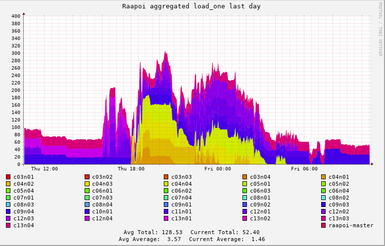

Rāpoi Cluster Documentation
Overview
Documentation
Accessing the Cluster
Basic Commands
Storage and Quotas
Using Partitions
Preparing your Environment
Running Jobs
Parallel Processing
Managing Jobs
Connecting to Cloud Providers
Using Containers
Using Jupyter Notebooks
Examples
Support
Utilisation
Rāpoi Cluster Documentation
Docs
»
Utilisation
Visit
here
to get real-time metrics and history of Raapoi's utilisation.
Ganglia example:

« Previous